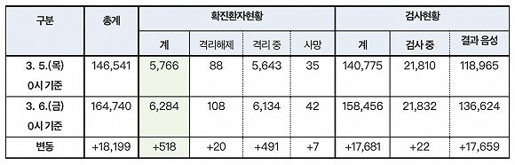
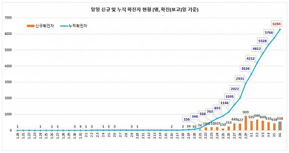

新冠确诊病例将破千，韩政府：全面禁止口罩出口
原文链接 备份链接 仁川国际机场。图片来源：Yonhap 记者：潘金花 “ 文在寅强调，“最大程度封锁”措施并非封堵和围困该地区，而是最大限度阻断疫情扩散，有关部门需争取使疫情拐点在本周之内到来。 ” 韩国中央防疫对策本部25日通报说，截 …
 图片来源：Yonhap
图片来源：Yonhap
“
政府有权禁止卫生口罩、洗手液、防护装备出口或运往国外，违者将处以5年以下有期徒刑或约合人民币29万元以下的罚款。
”
韩国中央防疫对策本部3月6日通报，截至当天零时，韩国较昨日零时新增518例新冠病毒感染病例，较昨日下午4时新增196例，累计确诊6284例，死亡增至42例，治愈增至108例。
截至目前，除确诊患者外，韩国接受病毒检测的人数累计158456人，24小时新增17681人，有136624人的检测结果呈阴性，其余21832人的结果还未出炉。

来源：韩国中央防疫对策本部
目前，韩国的新冠肺炎死亡病例数已经超过2015年的中东呼吸综合征（MERS）死亡病例数（39例）。截至6日零时，韩国新冠病例死亡率为0.7%，70到79岁为4.1%，80岁以上为6.0%。另据《中央日报》报道，当天上午，大邱还新增了1例死亡病例，即国内死亡病例增至43例。
截至目前，在累计确诊的6284例病例中，分别有4693例和984例出现在大邱和庆尚北道，占比74.7%和15.7%，24小时分别新增367例和123例。两地平均每10万人中有192.6人和37.0人确诊，其余地区则为0.3至4.2人，韩国全境为12.1人。
在大邱和庆北以外，韩国确诊病例数较高的地区还有京畿道120例、首尔市105例、釜山市95例、忠清南道90例以及庆尚南道77例。
在截至5日零时确诊的5766例病例中，有69.4%与集体感染有关。与新天地教会相关的确诊病例共有3452人，占比59.9%，其中大部分来自大邱（3013人）和庆北（348人）。

来源：韩国中央防疫对策本部
据韩国《朝鲜日报》5日报道，截至1日零时，韩国已有29888人进入居家隔离。2015年发生MERS疫情时，韩国累计居家隔离人数超过17000人。
目前韩国防疫部门和地方政府正在经历前所未有的超负荷工作。政府决定由一名公务员专门负责一名居家隔离者，但在大邱，一名公务员要负责7名居家隔离者。
据韩国外交部5日消息，截至当天下午3时，因新冠肺炎疫情对韩国采取入境管制措施的国家和地区已增至98个。
为解决医疗物资紧缺难题，韩国保健福祉部6日表示，从即日颁布实施新修订的《传染病预防管理法实施条例》。据此，新冠肺炎疫情等甲类传染病蔓延期间，防疫部门将有权禁止卫生口罩等医疗物资出口。
据韩联社报道，根据修订令，因甲类传染病流行导致预防、防疫、治疗物资价格飙升或紧缺，影响国民健康安全时，政府有权禁止卫生口罩、洗手液、防护装备出口或运往国外，违者将处以5年以下有期徒刑或5000万韩元（约合人民币29万元）以下罚款。
该条例颁布前一天，韩国政府还出台了口罩相关政策，包括扩大产量、增加发售量、限购限价、鼓励企业周末增产，以及考虑全面禁止口罩出口等。
同时，政府还决定采取临时限购措施，每人每周最多可购买2个口罩，并将通过医药品安全使用服务系统等防止重复购买。从下周开始，口罩还将按出生年份尾数实施限购制。

长按识别二维码
获取更多文章

原文链接 备份链接 仁川国际机场。图片来源：Yonhap 记者：潘金花 “ 文在寅强调，“最大程度封锁”措施并非封堵和围困该地区，而是最大限度阻断疫情扩散，有关部门需争取使疫情拐点在本周之内到来。 ” 韩国中央防疫对策本部25日通报说，截 …
原文链接 备份链接 澎湃新闻记者 刘栋 实习生 董安琪 新冠病毒疫情在韩国的发展突然加速。 2月20日，韩国新增53例确诊病例，超过了过去一个月所有确诊病例总和。21日上午，韩国疾病预防控制中心（KCDC）最新通报称，再新增52例确诊病 …
原文链接 备份链接 2月19日，韩国大邱市疑似出现超级传播事件的教堂附近，工作人员正在消毒。来源：中央日报 记者：潘金花 “ 大邱市一药店店员表示，MERS时期大邱没有出现确诊病例，人们并没有感到特别担心，但这次大家就像“打仗一样”，非常 …
原文链接 备份链接 图片来源：Yonhap “ 新天地教会周四已再次致歉，对于教会内出现多例确诊病例深感愧疚。 ” 韩国疾病管理本部3月5日通报，当天0时至下午4时，韩国新增322例新冠病毒感染病例，累计确诊6088例，死亡增至40例，治 …
原文链接 备份链接 图片来源：Yonhap 记者：潘金花 “ “新天地教会有责任积极配合政府及防疫部门的工作，但在提交信徒名单时却不断拖延、伪造，并有组织地回避调查，且据我们了解，该教会目前仍在各种地下场所进行传教和聚会。“ ” 韩国中央 …